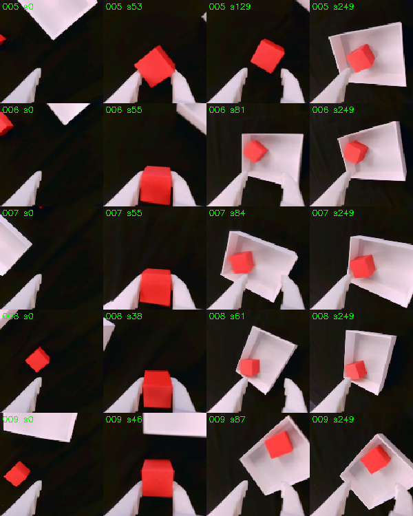
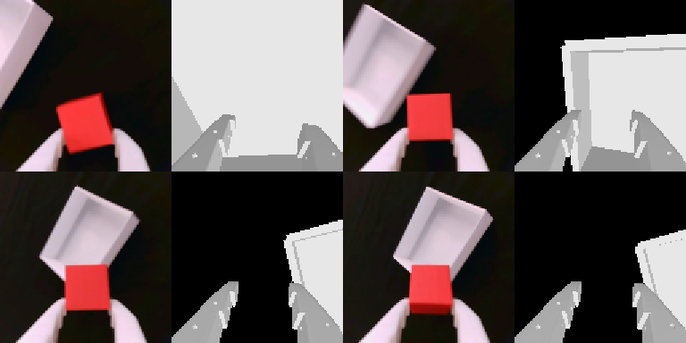

Research
What we’re working on.
- 01Sim-to-real RL with SquintOn the real arm
- 02Two-arm laundry foldingRig in progress
- 03Phi StudioOn the real arms
- 04robo_mimicOn the real arm
Updated 17 Oct 2026
Sim-to-real RL with Squint
Trained only in simulation, then run on our arm.
We run Squint (Almuzairee and Christensen, 2026), a fast visual RL method, on our SO-101. The policy sees a 16 × 16 wrist-camera image plus its joint angles and targets, and outputs a small change for each joint. Two tasks so far: ReachCube, and PlaceCube (cube into a bin).
What we did
- Our wrist camera sits differently from Squint’s. Its view overlaps theirs by 0.41 (IoU), and training never goes below 0.66. So we matched the simulated camera to ours and retrained.
- The policy runs on a MacBook CPU at 15 Hz.
- We keep a ledger of about 55 differences between Squint’s simulator and our arm, each checked in code or measured.
- Our checkpoint-loading fix was merged into Squint. We also traced a ManiSkill regression (#1498).
Real-arm results
PlaceCube, first session (14 Oct): 5 of 9 in the bin (filled squares). 1–3, bin 30 cm out: one never held the cube, two let go short of the bin. 4, cube and bin far apart: grabbed the bin’s wall. 5–9, closer layouts: all in the bin.
Not working yet: far layouts. Away from the start pose the simulated arm drifts from the real one, by 9.6 cm at the one grasp we measured. We suspect that is why.
Where we’re taking it
- Fix the arm model next
- Fit the joint offsets and camera mount from our recordings. Then score ReachCube on a fixed nine-point grid and test which ledger rows actually change real success.
- Train on what fails idea
- Widen training to the far-bin and out-of-view starts that failed, and pick starts with SGS (Zhang et al., 2026; our walkthrough), which favours starts the policy solves only some of the time. SGS was shown with PPO at up to about a million environments. Whether it helps Squint, which is off-policy and runs 1,024 environments, is open. A run takes about 12 minutes.
- Fragile objects idea
- The policy never squeezes: in simulation the cube weighs about 3 g, so a touch is enough. Fragile objects need controlled force, and the arm has no force sensor. But the servos can cap their torque and report current, and the simulator reports contact forces. So: penalise contact force above a break limit in training, give the policy the gripper current, and calibrate current against a scale before trying anything fragile.


Yashvardhan Gupta
Two-arm laundry folding
Reproducing Learning to Fold (Larchenko, 2026) on our arms.
The problem
Cloth is hard for robots. Every grasp changes the shape of what comes next, and one early slip spoils the fold. Ilia Larchenko’s policy folds tops and trousers with two SO-101 arms. It placed second in the real-robot final of the 2026 LeHome Challenge at ICRA.
It trained on two real rigs, the organizers’ and his own, plus simulation. Ours is neither. Will it fold on arms it has never seen?
How it learned
Demonstrations only show clean folds, so they never teach recovery. For that, Larchenko let his policy fold on its own and took over the moment it began to fail. Each takeover became a corrected episode.
Our plan
Run his released policy on our two arm pairs, unchanged, and count the folds. Then collect our own corrections the same way and count again.
- DoneHis model runs on our GPU server at 0.28 s per answer. It took 0.68 s until we turned off message compression.
- DoneHis robot program runs on our laptop and talks to the server.
- DoneThe organizers’ 500 episodes use our arms’ joint conventions. We checked with forward kinematics.
- DoneHis simulation policy runs in Isaac Sim on our GPU server. On the 8 unseen garments the challenge released, it folded 13 of 16 times, and 16 of 16 when we reran the same seeds.
- NowThe rig: two arm pairs 46 cm apart, three cameras. One shoulder servo stripped its gears and is being replaced.
- ThenZero-shot trials, then our own corrections.
Where we’re taking it
- Real-world RL with FlowDPG planned
- Larchenko had no reward signal on the real robot, and writes that a learned one
would almost certainly help
. FlowDPG (Shi et al., CoRL 2026; Skild AI and CMU) improves a flow-matching policy with reinforcement learning on the real robot, without backpropagating through the flow. Its reward comes from a learned progress model, SARM, which LeRobot already includes. Larchenko’s policy has a flow-matching action head, so it qualifies. - EXPO-FT future
- From Real-Time EXPO-FT (Dong, Hung, Sadigh and Finn, 2026): a small editor adjusts candidate action chunks, a critic picks the best, and the policy imitates its own successes. Our spec is written. Nothing has run yet.
Yashvardhan Gupta · Sai Krishna Maligireddy · Parv Patodia
Phi Studio
One local app for the SO-101 loop: set up, teleoperate, record, inspect, train, evaluate.
On our real arms it finds each arm’s port and camera, teleoperates with a live 3D twin, and records LeRobot datasets.
It already found things in our own data. The follower arm lags the leader by 108 ms, and 68 of our 120 cube episodes start with at least 1.5 s of idle time.
Evaluation is blind: tasks are fixed before a run, hardware faults don’t count against the policy, and an exact test says whether one policy beats another. Running real checkpoints inside Studio is next.
Parv Patodia · Yashvardhan Gupta
robo_mimic
Drive the arm with your hand, seen by one ordinary webcam.
- One camera can’t tell how far away a hand is, so the hand moves the arm only while a clutch is on, like lifting a mouse off the desk.
- The gap between thumb and index finger opens and closes the gripper.
- Hand rotation is off for now. On this five-joint arm, only 7–37% of tool pitches are reachable.
It drives the real SO-101 as well as the simulated one.
Yashvardhan Gupta